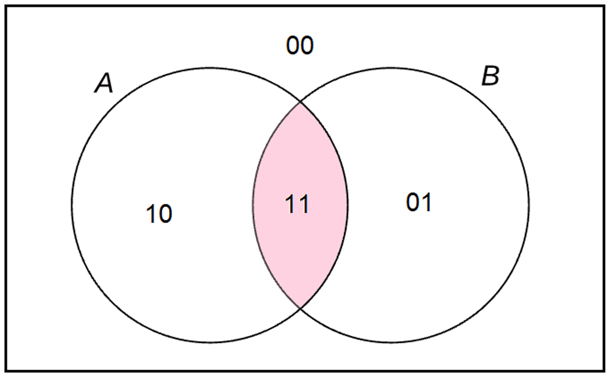

Nesta webaula, vamos estudar como o diagrama de Venn pode ser utilizado para demonstrar relações arbitrárias entre conjuntos. Já sabemos que os diagramas de Venn também podem ser usados para resolver problemas sobre cardinalidade de conjuntos, isto é, problemas que envolvem a contagem do número de elementos de conjuntos finitos. Mas, segundo Novaes (2014), o Diagrama de Venn não é apenas um esquema para ajudar o raciocínio. Ele foi concebido como uma representação diagramática capaz de atender a todas as possíveis relações lógicas entre as classes em estudo, sendo úteis, inclusive, para demonstrar relações arbitrárias entre conjuntos.v Relação arbitrária entre conjuntos Considere os conjuntos A e B, em que os compartimentos do diagrama representam as partes disjuntas do universo: utilizaremos uma numeração binária, composta apenas pelos algarismos 0 e 1, em que o primeiro algarismo é 0 ou 1, conforme um objeto desse compartimento pertença ou não ao conjunto A, enquanto o segundo algarismo é 0 ou 1, conforme um objeto desse compartimento pertença ou não ao conjunto B. Representação diagramática de uma relação arbitrária entre dois conjuntos  Fonte: adaptado de Novaes (2014). A numeração binária mostra que 22 = 4 compartimentos esgotam todas as possibilidades lógicas para um objeto do universo. O número 10 (lê-se: um, zero) representa objetos que pertençam exclusivamente ao conjunto A. O número 01 (zero, um) representa objetos que pertençam exclusivamente ao conjunto B. Já o número 11 (um, um) representa objetos que pertençam simultaneamente aos conjuntos A e B (interseção de A e B). Por fim, o número 00 (zero, zero) representa objetos que não pertencem a nenhum dos conjuntos A e B.
Tabelas-verdade Uma maneira equivalente de representar essa relação arbitrária é a utilização de tabelas-verdade. Confira a tabela-verdade para a relação arbitrária entre dois conjuntos: x∈A x∈B x∈A∩B 00F F F 01F V F 10V F F 11V V V Na primeira coluna da tabela, indicamos os 22=4 compartimentos que compõem o Diagrama de Venn para dois conjuntos, representados por números binários. Na segunda coluna anotamos V (verdadeiro) ou F (falso) conforme o objeto representado pelo seu respectivo número binário pertença, ou não, ao conjunto A. Na terceira coluna anotamos V (verdadeiro) ou F (falso) conforme o objeto representado pelo seu respectivo número binário pertença, ou não, ao conjunto B. Finalmente, na última coluna, anotamos V (verdadeiro) ou F (falso) conforme o objeto representado pelo seu respectivo número binário pertença, ou não, ao conjunto A∩B. Esperamos que você tenha compreendido a utilização de diagrama de Venn tanto na representação de operações quanto na representação de relações arbitrárias entre conjuntos. Compreender a natureza dessas operações é componente importante no desenvolvimento do raciocínio computacional.